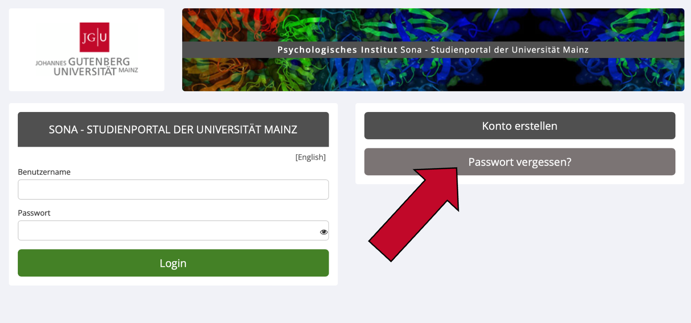
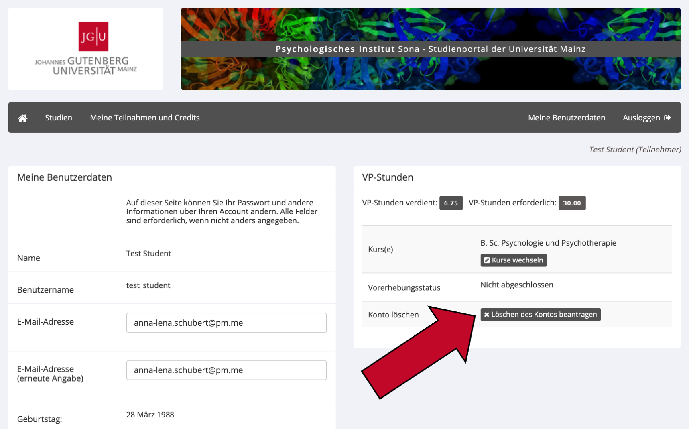

5 Sonstiges
5.1 Wie verwalte ich meine E-Mail-Benachrichtigungen?
- Loggen Sie sich mit Ihrem Sona Account ein.
- Gehen Sie auf
Meine Benutzerdatenund scrollen Sie nach ganz unten. In den letzten beiden Einstellungen können Sie auswählen, ob Sie Einladungs-E-Mails für Studien erhalten wollen und ob Sie eine wöchentliche E-Mail-Benachrichtigung mit verfügbaren Studien erhalten wollen. - Wählen Sie die gewünschte Einstellung aus und klicken Sie auf
Aktualisieren, damit Ihre Eingabe im System gespeichert wird.
5.2 Nutzernamen oder Passwort vergessen?
Wenn Sie Ihren Nutzernamen oder Ihr Passwort vergessen haben, setzen Sie bitte Ihr Passwort zurück.
- Besuchen Sie die Startseite von Sona: https://uni-mainz-jgu.sona-systems.com
- Klicken Sie rechts auf den Knopf
Passwort vergessen?

- Geben Sie im erscheinenden Fenster Ihre E-Mail-Adresse oder Ihren Benutzernamen an.
- Daraufhin wird Ihnen ein Link zum Zurücksetzen Ihres Passworts per E-Mail zugesandt. Dieser Link ist 24 Stunden lang gültig. Sobald Sie auf den Link klicken, wird ein neues Passwort generiert und Ihnen gemeinsam mit Ihrem Nutzernamen per E-Mail zugeschickt. Wenn Sie eine Kennwortzurücksetzung angefordert haben und nach 30 Minuten noch keine E-Mail vom System eingetroffen ist, überprüfen Sie den Junk-Mail-Ordner Ihres E-Mail-Programms.
5.3 Sona APP
Es gibt eine kostenlose Sona App, die Sie im App Store (IOS) oder Google Play Store (Android) herunterladen können. Suchen Sie dafür nach „Sona“ oder „Sona Mobile“. Die App hat im Gegensatz zur Browser-Version allerdings nur eingeschränkte Funktionen.
5.4 Wie kann ich meinen Account löschen?
- Loggen Sie sich bei Sona ein und klicken Sie in der Menüleiste rechts auf
Meine Benutzerdaten. - In der rechten Spalte finden Sie den Knopf
Löschen des Kontos beantragen. Klicken Sie auf diesen Knopf und bestätigen Sie die Löschung Ihres Accounts.

- Nach dieser Bestätigung wird ihr Konto sofort deaktiviert. Sie können sich nicht mehr bei Sona anmelden und erhalten keine E-Mails mehr von Sona. Die endgültige Löschung wird manuell von der Administration vorgenommen, um sicherzustellen, dass durch versehentliches Löschen keine VP-Stunden ungewollt verloren gehen.
Wichtiger Hinweis: Bitte löschen Sie Ihren Account als Psychologiestudent*in niemals selbstständig! Ihr Konto wird nach Ihrer Exmatrikulation durch das Prüfungsamt deaktiviert. Sollten Sie Ihren Account versehentlich gelöscht haben, wenden Sie sich schnellstmöglich an sona@uni-mainz.de, dann kann Ihr Account gegebenenfalls wiederhergestellt werden.
5.5 Noch Fragen?
Falls Sie weitere Fragen oder Probleme haben, wenden Sie sich bitte an die Administration unter sona@uni-mainz.de.